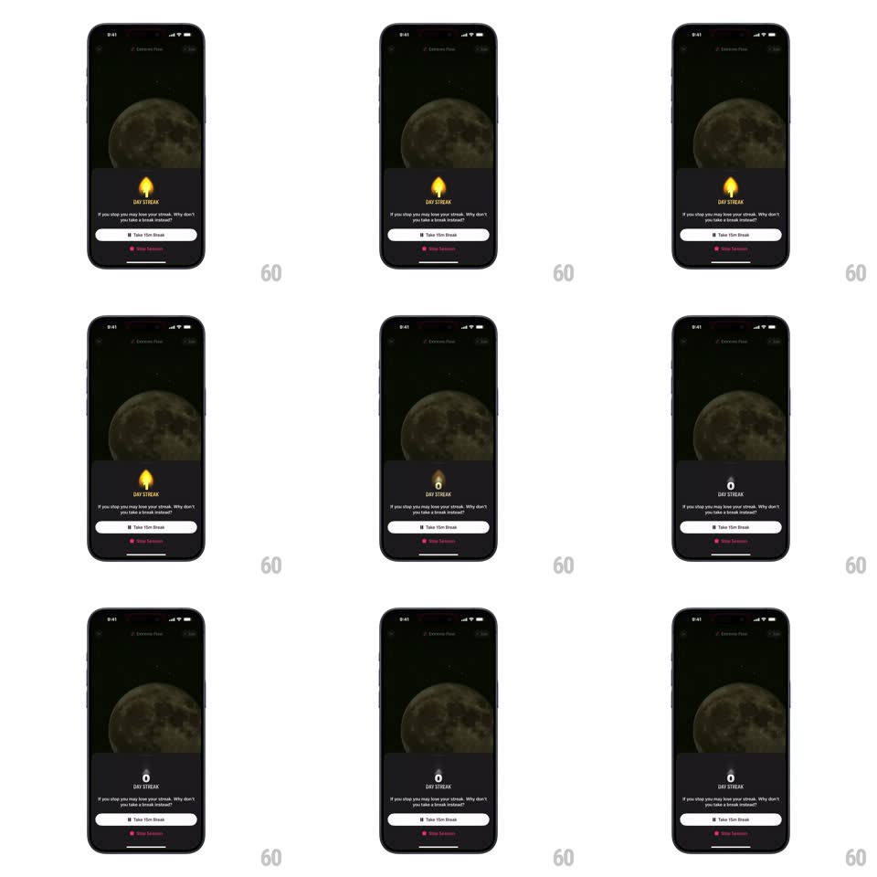

Media
Frame-by-frame

Rebuild this animation 1:1: Opal's streak break - the glowing yellow flame badge "1 DAY STREAK" drains to a gray circle "0 DAY STREAK" after tapping Break Streak, over a dark moon backdrop.

Rebuild this animation 1:1: Opal's streak break - the glowing yellow flame badge "1 DAY STREAK" drains to a gray circle "0 DAY STREAK" after tapping Break Streak, over a dark moon backdrop.
## Integration
Integration: stack-agnostic spec - springs given as stiffness/damping, timed motions as duration + curve; map every value to your framework and animation library of choice.
## Scene
Dark screen with a large moon photo. Bottom card: flame icon, "1 DAY STREAK" label, copy ("If you stop you may lose your streak. Why don't you take a break instead?"), a white "Take 15m Break" button, and a pink "Break Streak" link. After: a gray hollow circle icon with "0 DAY STREAK".
## Motion spec
Pattern: badge drain, ~700ms.
- Flame: the yellow flame flickers out - its glow collapses (150ms), the flame shape shrinks and desaturates to gray (300ms), morphing into the hollow circle (200ms, spring ~380/22).
- Digit: "1" rolls down to "0" (odometer, 250ms) as the label's color fades yellow -> gray.
- Copy: the "Break Streak" link fades out (200ms); the rest of the card holds position.
- Moon: unchanged - only the badge area animates.
## Calibration
- The morph is flame-to-circle, one shape becoming the other - not a crossfade of two icons.
- Color drains from the badge first, then the label, 80ms apart.
## Reduced motion
The badge crossfades to the 0-day state (300ms); no morph.
## Don't miss
- The transition is a loss, not a celebration - no confetti, no bounce on landing.
- The "Take 15m Break" button survives the transition unchanged.